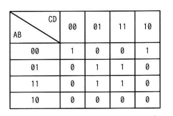

A, B, C, D を論理変数とするとき，次のカルノー図と等価な論理式はどれか。ここで，・は論理積，+は論理和，X̅はXの否定を表す。
| AB＼CD | 00 | 01 | 11 | 10 |
|---|---|---|---|---|
| 00 | 1 | 0 | 0 | 1 |
| 01 | 0 | 1 | 1 | 0 |
| 11 | 0 | 1 | 1 | 0 |
| 10 | 0 | 0 | 0 | 0 |
ア A・B・C̅・D + B̅・D̅
イ Ā・B̅・C̅・D̅ + B・D
ウ A・B・D + B̅・D̅
エ Ā・B̅・D̅ + B・D

エ：Ā・B̅・D̅ + B・D
| 選択肢 | 内容 | 補足 |
|---|---|---|
| ア | A・B・C̅・D + B̅・D̅ | AB=11,CD=01のみ対応、A=0側のマスをカバーできない |
| イ | Ā・B̅・C̅・D̅ + B・D | 前半項がAB=00,CD=00の1マスのみで、AB=00,CD=10をカバーできない |
| ウ | A・B・D + B̅・D̅ | AB=11側は正しいがAB=01側（B・Dの一部）をカバーできない |
| エ | Ā・B̅・D̅ + B・D | 正解。カルノー図の6つの1をすべて過不足なくカバーする |
出典：2025年度 秋期 応用情報技術者試験 午前 問1（IPA）